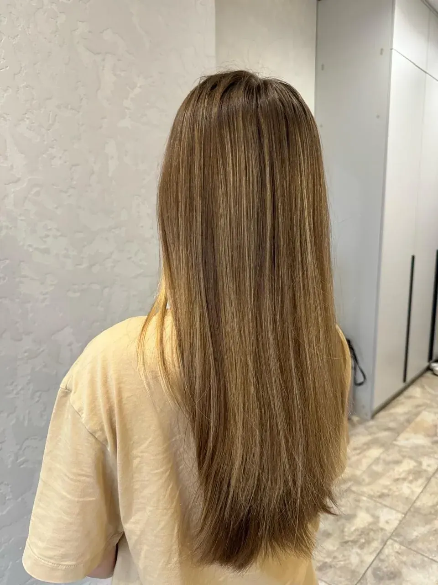

Седина — не проблема, которую нужно «решить», а задача цвета, у которой есть несколько хороших решений. Выбор зависит от того, сколько седых волос, где они, как часто вы готовы приходить к колористу и как вы хотите выглядеть.
Полное закрашивание
Колорист подбирает стойкий оттенок, который ровно покрывает седые волосы. Результат — однородный цвет, как в юности. Минус в том, что на тёмных волосах граница отросшей седины видна уже через несколько недель, и визиты становятся частыми.
Лучше всего подходит, когда седины немного или когда для вас важен именно ровный, плотный цвет.
Камуфляж и тонирование
Здесь задача не спрятать каждый седой волос, а смягчить контраст. Колорист использует более деликатные составы, седина приобретает оттенок, близкий к основному цвету, и отрастает мягко, без резкой полосы.
Для такой работы хорошо подходит травяное окрашивание Infusion: оно без аммиака, совмещает цвет и уход и работает в том числе с сединой.

Растяжка цвета и светлые пряди
Если седины много, а вы светло-русая или русая, колорист может «вплести» седину в светлые переливы — например, с помощью техники шатуш. Отрастающие седые корни сливаются со светлыми прядями, и визиты становятся реже.
Свой седой цвет
Всё больше женщин выбирает собственную седину. Это красиво, если с цветом работают так же внимательно, как с окрашиванием. Седые волосы часто суше и жёстче, могут желтеть. Им нужны:
- стрижка с чёткой формой, которая держит линию;
- увлажняющий уход и иногда оттеночный шампунь против желтизны;
- переходный период: колорист поможет пройти его без резкой границы между окрашенной длиной и седыми корнями.
Как выбрать свою стратегию
Задайте себе три вопроса и обсудите ответы с колористом:
- Как часто я готова приходить на окрашивание?
- Что мне важнее: ровный цвет или естественное отрастание?
- Как выглядит мой идеальный вариант через три месяца, а не только в день визита?
Вопросы и ответы
Закрашивает ли травяное окрашивание седину?
Да, Infusion подходит и для работы с сединой. Насколько плотным будет покрытие, колорист оценит на консультации.
Как часто нужно закрашивать корни при седине?
При полном закрашивании на тёмных волосах — чаще, чем при камуфляже или светлых переливах. Колорист подберёт схему под ваш ритм.
Можно ли перейти на свою седину без стрижки «под ноль»?
Да. Колорист и стилист помогут пройти переходный период мягко: тонированием и стрижкой, которая постепенно убирает окрашенную длину.